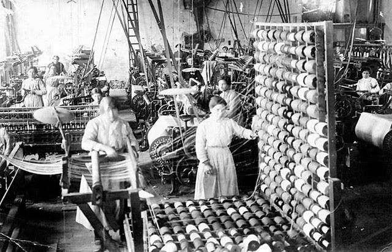
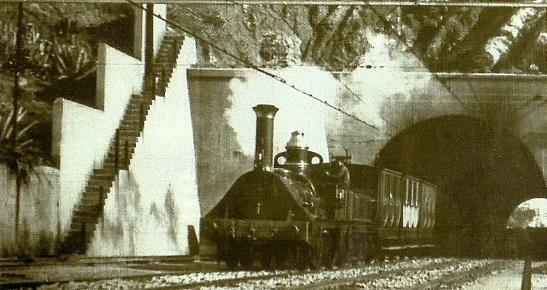
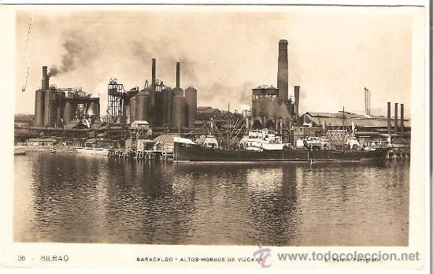
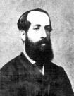
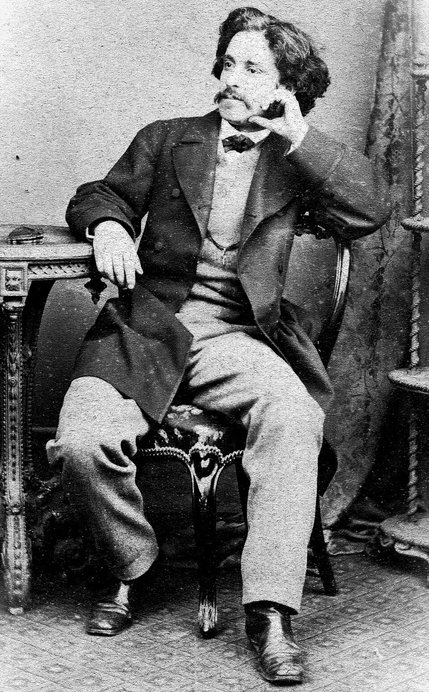
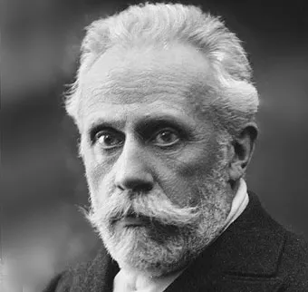
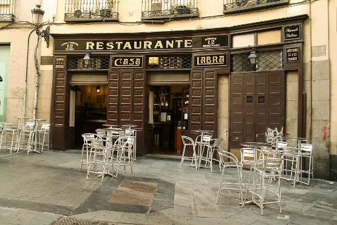
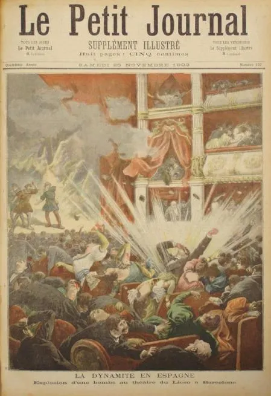
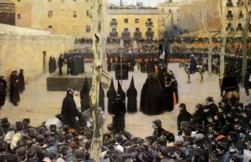
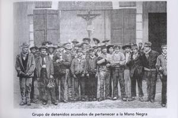

Tema 3: Industrialización y Orígenes del Movimiento Obrero en España
Las transformaciones económicas del siglo XIX, las reformas agrarias liberales y la paulatina organización política y sindical del proletariado industrial y campesino.
1. Las Transformaciones Económicas y la Revolución Industrial
A diferencia de otras potencias del norte de Europa como Inglaterra o Alemania, el proceso de industrialización en España durante el siglo XIX fue tardío, lento y concentrado de forma muy localizada en áreas geográficas concretas de la periferia peninsular.

Imagen 1: Trabajo infantil y femenino en una hilandería del textil de algodón en CataluñaVarios factores fundamentales explican la lentitud del despegue industrial de nuestro país:
- La escasez de carbón nacional: Las minas peninsulares (especialmente las de Asturias) producían una hulla de escaso poder calorífico y costes de extracción muy elevados.
- La debilidad del mercado interior: Las dificultades de transporte y, sobre todo, el escaso poder adquisitivo de una población mayoritariamente campesina impedían la existencia de una fuerte demanda interna de productos manufacturados.
- La inestabilidad política y la pérdida colonial: Las guerras de independencia americanas privaron al comercio nacional de mercados cautivos clave y caudales de metales preciosos.
- La dependencia del capital extranjero y el proteccionismo: Se recurrió a capitales de fuera para financiar grandes infraestructuras como las minas o el ferrocarril, al tiempo que se decretaban aranceles muy rígidos para defender a los trigueros de Castilla y los industriales textiles de Cataluña de la competencia foránea.
La Reforma Agraria Liberal: Las Desamortizaciones
La gran transformación económica del campo vino de la mano de la demolición de las estructuras de propiedad señorial del Antiguo Régimen. Esto se logró gracias al proceso de desamortización, consistente en la expropiación por parte del Estado de tierras amortizadas en manos de las "manos muertas" (la Iglesia y los ayuntamientos) para sacarlas a subasta pública.
💵 Las Dos Grandes Leyes Desamortizadoras
- La Desamortización de Mendizábal (1836): Decretada por el ministro progresista Juan Álvarez de Mendizábal, afectó a los bienes raíces de la Iglesia católica (clero regular). Sus objetivos fueron financieros (pagar la deuda del Estado y financiar la Guerra Carlista) y políticos (crear una base de terratenientes adictos al trono liberal de Isabel II).
- La Desamortización de Madoz (1855): Promulgada por el también progresista Pascual Madoz, liquidó las propiedades eclesiásticas restantes y nacionalizó los bienes propios y comunales de los municipios. Con su recaudación se financió gran parte del tendido ferroviario.
Aunque estas reformas incrementaron la superficie cultivada (roturación de nuevas tierras) y permitieron prescindir de importaciones de trigo, no sirvieron para modernizar las técnicas agrícolas. La nobleza y la burguesía urbana compraron la inmensa mayoría de los lotes, de modo que los jornaleros y campesinos pobres se vieron privados del uso libre de comunales (causando su empobrecimiento sistemático) y el latifundismo se consolidó con fuerza en el sur peninsular.
Paralelamente, el agro peninsular quedó caracterizado por un marcado dualismo agrario y regional:
- El Interior Cerealista Tradicional: Dominado por el monocultivo de trigo y cereales en la Meseta de bajísima productividad. Sobrevivió a la competencia internacional del grano americano y ruso gracias a un rígido proteccionismo arancelario impulsado por las élites agrícolas castellanas.
- La Agricultura de Exportación Mediterránea y Vitivinícola: Espectacular expansión del viñedo (La Rioja, La Mancha, Cataluña y León) favorecida por la demanda europea tras la plaga de la filoxera en Francia, acompañada del despegue de los cítricos, frutos secos, hortalizas y el olivar en la franja levantina y andaluza.
- La Especialización Agroexportadora Canaria: Reorientada hacia los cultivos atlánticos de exportación (plátanos, tomates, papas y tabaco) tras el colapso de la cochinilla en 1870, beneficiándose de la franquicia arancelaria de la Ley de Puertos Francos de 1852 y de las redes de inversión británicas.
El Papel del Ferrocarril
La expansión del tendido ferroviario representó un hito clave de modernización. Tras un primer ensayo en Cuba (trayecto La Habana-Güines en 1837) y la inauguración de la línea Barcelona-Mataró en 1848 en la península, el verdadero despegue se produjo gracias a la Ley General de Ferrocarriles de 1855.

Imagen 2: Representación artística de la primera línea de ferrocarril española en 1848La red ferroviaria dejó tres rasgos estructurales decisivos:
- Estructura Radial de la Red: Diseñada con centro en Madrid, lo que entorpeció los intercambios comerciales directos y transversales entre las regiones periféricas más dinámicas .
- Ancho de Vía Ibérico (1,67 metros frente a los 1,52 metros europeos): Contrario al mito bélico de evitar invasiones militares francesas, la decisión obedeció a un criterio técnico de los ingenieros para dar cabida a calderas de vapor de mayor potencia y estabilidad para remontar el accidentado relieve peninsular . No obstante, esto supuso un grave obstáculo para la integración económica de España con el mercado europeo .
- Grandes Compañías y Mercado Nacional: Tras la crisis de 1866, el mapa ferroviario fue monopolizado por dos gigantescos consorcios de capital privado: la compañía MZA (Madrid a Zaragoza y Alicante) y la compañía del Norte . Hacia 1896 se superaron los 13.000 km de vía, logrando por primera vez integrar los intercambios agrícolas e industriales de España.
A finales del siglo XIX, al amparo de la Segunda Revolución Industrial y de las innovaciones eléctricas, el transporte vivió una segunda transformación con la implantación de las redes de tranvías eléctricos urbanos en grandes ciudades como Madrid (1898) y Barcelona, sustituyendo progresivamente a la tracción animal.
Focos de la Industrialización
La geografía fabril se estructuró en tres grandes polos periféricos:
- El textil catalán de algodón: Concentrado en Barcelona y en colonias fluviales del Ter y el Llobregat para abaratar costes energéticos usando saltos de agua. Introdujo tempranamente innovaciones como las mule-jennies, el vapor Bonaplata (1833) y las selfactinas (máquinas de hilar automáticas), triplicando sus importaciones de algodón entre 1876 y 1900 pese a no poseer carbón ni algodón propio, gracias a la reserva arancelaria proteccionista de los mercados de Cuba y Puerto Rico.
- Evolución de la Siderurgia (Málaga, Asturias y Vizcaya): Arrancó tempranamente en Málaga (década de 1830) usando carbón vegetal de baja productividad; se desplazó en los años sesenta a Asturias (Mieres y La Felguera) por la abundancia de hulla; y alcanzó su apogeo definitivo en Vizcaya tras la fundación de los Altos Hornos de Bilbao en 1882 . Vizcaya aplicó los convertidores Bessemer y los hornos Martins-Siemens, consolidando el rentable eje mercantil Bilbao-Cardiff (exportando mineral de hierro vizcaíno de alta calidad a Inglaterra e importando carbón de coque galés de gran poder calorífico) . Vizcaya reinvirtió el 56% de sus beneficios en crear su propia banca (Banco de Bilbao, Banco de Vizcaya) y en fundar astilleros pesados como Astilleros del Nervión (1888) y Euskalduna (1890) .
- La Minería Metálica de Exportación: El subsuelo español poseía fabulosas reservas minerales, pero la Ley de Minas de 1871 desamortizó y subastó las concesiones de Riotinto (cobre en Huelva), Almadén (mercurio) o Peñarroya a compañías francesas e inglesas para amortizar la deuda pública . La minería funcionó como un enclave colonial exportador cuyos beneficios financieros se repatriaban en su mayoría al extranjero
En el último tercio del siglo XIX irrumpió la Segunda Revolución Industrial en España, destacando :
- El Sector Eléctrico: Introducción del alumbrado público en Madrid (1881) y Barcelona (1882), extendido rápidamente a fábricas, tranvías y hogares urbanos
- El Sector Químico: Orientado a la producción de colorantes e insumos sintéticos para el textil catalán y a la elaboración de abonos y fertilizantes para la agricultura levantina.
- Industrias Agroalimentarias Regionales: Desarrollo de las harineras en Castilla, bodegas vinícolas en La Rioja y Jerez, e industrias tabaqueras y fabriles en Canarias.

Imagen 3: Instalaciones metalúrgicas de los Altos Hornos de Vizcaya a finales del siglo XIX🚢 Canarias: El ciclo de exportación y la Ley de Puertos Francos de 1852
En el plano socioeconómico del archipiélago canario, la pérdida del mercado de tintes naturales por la comercialización europea de los colorantes sintéticos provocó la severa crisis de la cochinilla a partir de 1870. Para superar el colapso, el sector agrícola insular se reconvirtió hacia los nuevos cultivos de exportación, liderados por el plátano, el tomate y la papa.
La gran transformación que dinamizó la economía contemporánea canaria fue la promulgación del Real Decreto de los Puertos Francos de 1852, impulsado por el ministro Juan Bravo Murillo. Esta medida de corte librecambista eliminaba las trabas arancelarias en el archipiélago, convirtiendo a los puertos canarios en depósitos de mercancías y plataformas logísticas estratégicas para el abastecimiento, carboneo y reparación de buques de las potencias navales en expansión.
El sistema atrajo de forma masiva capital internacional, principalmente británico. A partir de la década de 1880, el inglés Edward Alfred Baillon introdujo de forma pionera la producción y exportación del tomate en Telde. Junto con influyentes consignatarios y empresarios como Thomas Miller o Alfred L. Jones, y grandes multinacionales y navieras británicas como Elder Dempster y Fyffes, se potenció de manera espectacular el comercio atlántico. Este auge consolidó en las islas a una próspera comunidad británica que dejó una profunda huella residencial, social y cultural en zonas como la Ciudad Jardín en Las Palmas o el Puerto de la Cruz en Tenerife.
2. La Sociedad de Clases y los Orígenes del Movimiento Obrero
La revolución liberal desmanteló la sociedad estamental del Antiguo Régimen, implantando en su lugar una sociedad de clases basada en la propiedad privada y la igualdad formal ante la ley. Esta nueva realidad económica propició el surgimiento de una oligarquía dominante (terratenientes, industriales catalanes y siderúrgicos vascos) y la aparición de una masa obrera urbana o rural sujeta a duras condiciones laborales (salarios paupérrimos, jornadas extenuantes de hasta 14 horas, explotación infantil y total ausencia de protección social por enfermedad o accidente).
Las Primeras Manifestaciones de Protesta
Debido al lento ritmo de industrialización, el movimiento obrero fue incipiente y duramente reprimido en sus inicios. Sus manifestaciones se canalizaron a través de dos vertientes:
- El ludismo (destrucción de máquinas): La masa obrera consideraba que las nuevas tecnologías les arrebataban el empleo. Los brotes más notorios se registraron en Alcoy (1821), en la quema de la fábrica de vapor Bonaplata de Barcelona (1835) y en la rebelión contra las "selfactinas" (máquinas de hilar automáticas) en 1854.
- Las Sociedades de Socorros Mutuos: El primer sindicato de nuestro país fue la Sociedad de Tejedores de Barcelona (1840). Funcionaba con cuotas internas para crear una caja de resistencia con la que auxiliar a los obreros enfermos, despedidos o en huelga.
El estallido de la primera huelga general de España en 1855 en Barcelona (durante el Bienio Progresista) demostró la madurez de la conciencia obrera de la época, logrando forzar negociaciones de mejora salarial y la liberación de los cabecillas obreros de la milicia.
3. La Llegada de la Internacional (AIT) a España
El triunfo de la Revolución del 68 y el clima de plenas libertades públicas consagrado en la Constitución de 1869 propiciaron un impulso sin precedentes para las agrupaciones de trabajadores mediante la llegada del internacionalismo.

Imagen 4: Giuseppe Fanelli, introductor del anarquismo internacionalista en EspañaLa introducción de estas corrientes ideológicas dio lugar a una bipolarización irreversible en el seno de la clase obrera peninsular:
- La vía anarquista (Giuseppe Fanelli): Enviado directamente a Madrid por el ideólogo ruso Mijaíl Bakunin en 1868, difundió los postulados de la supresión del Estado, el apoliticismo de clase (no participación electoral) y la colectivización. Esto provocó que la posterior Federación Regional Española (FRE) de la AIT (fundada en 1870) tuviera una inmensa mayoría de tintes anarquistas, consolidándose firmemente en los telares de Cataluña y el campesinado de Andalucía.
- La vía marxista (Paul Lafargue): El yerno de Karl Marx llegó a Madrid en 1871 para contrarrestar el influjo de Fanelli y difundir el socialismo científico. Defendía la necesidad de que la clase obrera fundase un partido político obrero para conquistar democráticamente el poder del Estado y transformar la propiedad privada en colectiva. Este núcleo madrileño fue expulsado de la FRE en 1872 por sus diferencias insalvables con los anarquistas, creando la Nueva Federación Madrileña.

Imagen 5: Paul Lafargue, artífice de la difusión del pensamiento marxista en el país
4. Bipartidismo Obrero durante la Restauración (1875 - 1902)
Con el regreso de los Borbones en la persona de Alfonso XII y la posterior subida al gobierno del conservador Antonio Cánovas del Castillo, las asociaciones obreras fueron perseguidas con dureza y obligadas a actuar en la clandestinidad (1874-1881).
Tras la llegada de los liberales de Sagasta al Consejo de Ministros en 1881 y la consagración legal de la Ley de Asociaciones en 1887, el movimiento obrero volvió plenamente a la legalidad constitucional, expandiéndose con celeridad.
A. La Vía Socialista: PSOE y UGT
El socialismo marxista español se estructuró de forma orgánica y progresiva a través de dos grandes plataformas fundadas por el líder obrero y tipógrafo Pablo Iglesias Posse:

Imagen 6: Pablo Iglesias Posse, líder histórico del socialismo y de la UGT en EspañaEl socialismo español tuvo su mayor implantación en las cuencas mineras de Asturias, las metalurgias de Vizcaya y en los gremios tipográficos de Madrid. En 1910, tras pactar con los republicanos en la conjunción republicano-socialista, Pablo Iglesias se convirtió en el primer diputado socialista de la historia del Congreso de los Diputados de España.

Imagen 7: Local de la madrileña Casa Labra donde se firmó de forma clandestina el acta fundacional del PSOE en 1879B. La Vía Anarquista: Sindicatos y "Acción Directa"
El anarquismo continuó siendo la fuerza obrera mayoritaria del país, articulada inicialmente bajo la Federación de Trabajadores de la Región Española (FTRE) de 1881. No obstante, sufrió graves problemas de cohesión interna debido a su carácter asambleario y a la dura represión de las autoridades.
Pronto el anarquismo se dividió entre los defensores de la acción sindical de masas (que más tarde fundarían en 1910 la célebre Confederación Nacional del Trabajo o CNT) y los partidarios de la «propaganda por el hecho» o «acción directa», corriente terrorista minoritaria que pretendía prender la mecha revolucionaria asesinando a altos cargos del régimen y de la Iglesia.

Imagen 8: Grabado francés de época del trágico estallido de la bomba de Santiago Salvador en el LiceoLa década de los noventa fue especialmente convulsa y sangrienta por el azote de esta espiral violenta:

Imagen 9: El garrote vil (óleo de Ramón Casas, 1894), obra que plasma la frialdad judicial de la represión militar estatal de fin de sigloLa Mano Negra en Andalucía
En el campo andaluz, asfixiado por el desempleo estacional y el hambre de tierras tras las desamortizaciones comunales, el anarquismo se extendió con rapidez entre los jornaleros. Entre 1882 y 1883 se atribuyeron abundantes quemas de cosechas y asesinatos a una presunta sociedad secreta denominada La Mano Negra.

Imagen 10: Grupo de jornaleros andaluces apresados y procesados bajo acusación de filiación a La Mano Negra en Jerez🇮🇨 Canarias: El despertar obrero y la conflictividad de consumos de 1897
En Canarias, la concienciación y autoorganización de las clases trabajadoras comenzó a articularse durante el Sexenio Democrático mediante el nacimiento de las primeras sociedades de socorros mutuos y asociaciones gremiales (tipógrafos, panaderos o zapateros) en las dos capitales insulares, marcando el germen del posterior sindicalismo de estibadores y cargadores del muelle portuario.
Durante la Restauración, la conflictividad social no se centró en demandas fabriles, sino en la protesta urbana y rural contra los impopulares impuestos de consumos (gravámenes indirectos que encarecían drásticamente productos de primera necesidad como el pan, las papas, el aceite y la harina, golpeando con severidad a las capas populares).
El clímax de esta tensión estalló entre 1897 y 1898 con los célebres motines de consumos: violentas revueltas espontáneas sacudieron municipios como Vega de San Mateo y San Lorenzo en Gran Canaria, El Paso en La Palma, y varios puntos de Fuerteventura. Los manifestantes asaltaron las casetas de cobro municipal y quemaron la documentación fiscal, obligando a intervenir a la Guardia Civil y al Ejército regular para reprimir los tumultos provocados por la miseria.